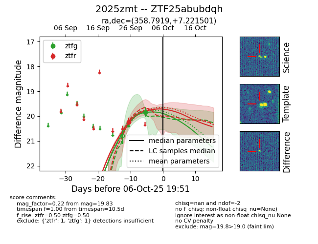
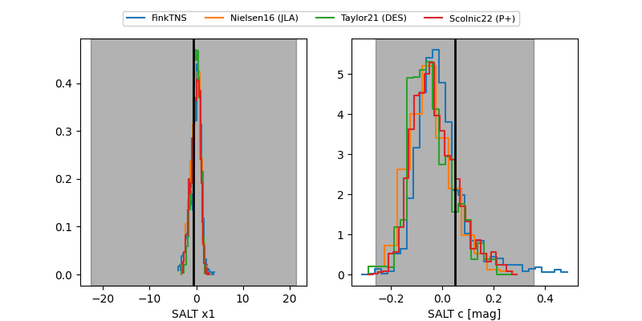

FINK: ZTF25abubdqh
Lasair: ZTF25abubdqh
ALeRCE: ZTF25abubdqh
TNS: 2025zmt
YSE: 2025zmt
ZTF25abubdqh (ztf,fink)
2025zmt (tns,yse)
equatorial (ra, dec) = (358.7919,+7.22150)
galactic (l, b) = (99.2836,-53.04705)


last ztfg=19.83, ztfr=20.24
1 ztfg, 1 ztfr detections